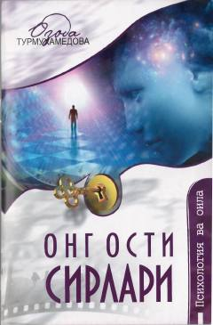

OOOng osti imkoniyatlari va ularni boshqarish sirlari haqida amaliy qo'llanma.
Ushbu kitob inson ongining cheksiz imkoniyatlari va ong osti jarayonlarining hayotimizdagi o'rni haqida hikoya qiladi. Muallif hayotiy misollar orqali atrof-muhitning inson ongiga ta'siri, bolalikdagi shakllanish va psixologik omillarni tushuntirib beradi.